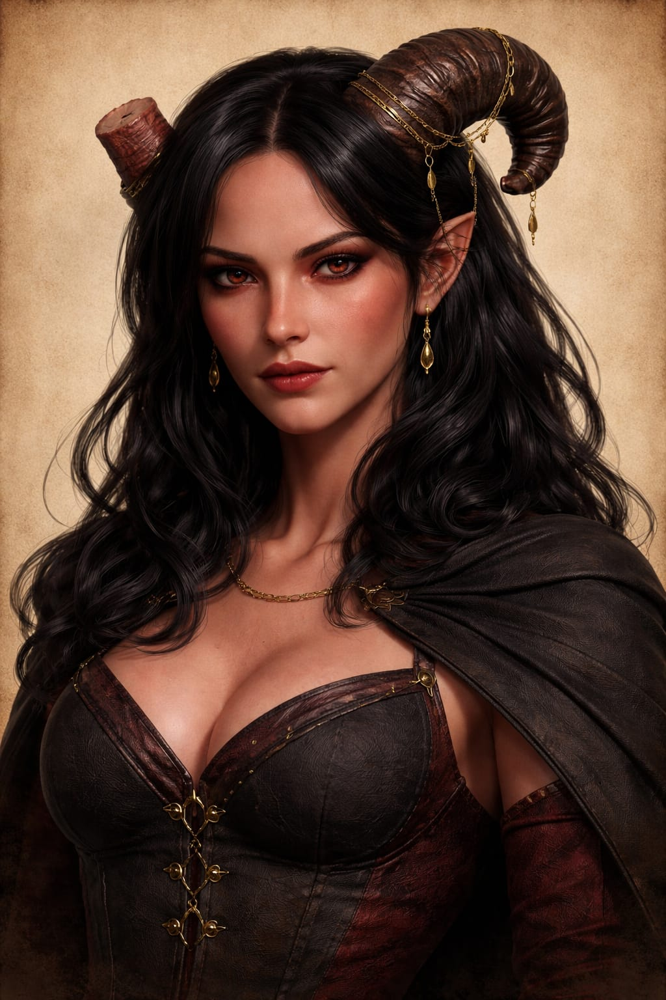
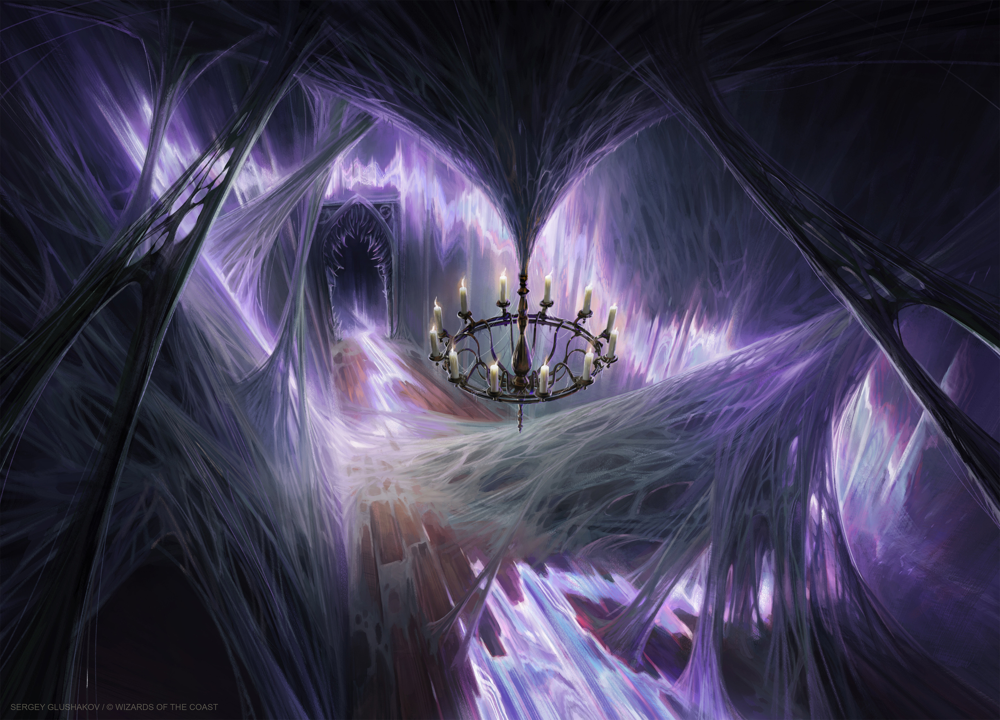

Karakter Müziği
CV-MÜZ · Campaign V
>_ Şu An Çalıyor
— Seçilmedi —
KARAKTER MÜZİĞİ
0:00
0:00
10

Tuğberk GÖKTEPE tarafından canlandırılmış ve oynanmıştır. Tuğberk'in üçüncü karakteridir.
Faen Tlabbar konağının Dördüncü Taş Katı, konağın en soğuk yeridir. Isı oradan aşağı, kasaların bulunduğu derinliğe doğru çekilir; koridorun taşına avucunu koyarsan, elinin altındaki soğuğun bir yerde kesildiğini, birkaç parmak ötede yeniden başladığını fark edersin. Konakta bunu fark eden dokuz kişi vardır. Dokuzu da yetişkindir ve dokuzu da büyücüdür. Onuncusu, o kış, dört yaşındaydı ve hâlâ bir adı yoktu.
Bu, Syfelin'de kimsenin tuhaf bulduğu bir durum değildi. Erkek doğan bir çocuk eve bir masraftır. Masrafın bir gün kâra dönüp dönmeyeceği beklemeyle anlaşılır, isimle değil. Matron Jhaelolin Zilva Orlyervs Faen Tlabbar'ın on yedi kızı vardı ve on yedisinin de doğduğu gün adı konmuştu. Oğullarının sayısı hiçbir deftere geçmemişti.
Kieran Faen Tlabbar onu batı koridorunda buldu.
Çocuk duvara dokunuyordu. Tam olarak dokunmuyordu — parmağını taşın üzerinde, görünmeyen bir çizgi boyunca yürütüyor, belli bir noktada duruyor, geri dönüyor, aynı hattı baştan çiziyordu. Mantar lambalarının yeşil ışığı ince kolunun üzerinde titriyordu. Koridorda ne bir işaret vardı ne bir oyuk. Sadece kuru taş ve taşın içine gömülü, kırk yıl önce Kieran'ın kendi elleriyle ördüğü batı sargısı.
Çocuk hattı yedi kez çizdi. Hepsinde aynı yerde durdu. Üçüncü düğümde. Kieran öksürdü. Çocuk elini indirdi, gözünü yere dikti, bekledi. Dört yaşında öğrenilmiş bir refleksti bu ve Kieran onu gördüğünde, bu evde bir asırdır hissetmediği bir şey hissetti.
"Ne yapıyordun?"
"Duvarın soğuğu burada değişiyor."
O akşam Baş Büyücü, Matron'un huzuruna çıktı ve kırk yıldır yapmadığı bir şey yaptı: bir şey istedi.
"O çocuğa isim verin. Ben kullanacağım."
Matron başını kaldırmadı. Önündeki kayda bir rakam yazdı.
"Faydasız çıkarsa masrafı sana yazarım, Kieran."
Ilyndar adını böyle aldı. Bir yetenek ödülü değil, bir kefalet olarak.
Faen Tlabbar konağında erkek çocuklar dokuz yaşına kadar Alt Avlu'da tutulur. Alt Avlu bir avlu değildir; konağın en derin kesitinde, tavanı kaya olan, duvarları rutubetten yeşile çalan geniş bir salondur. Orada bir mürebbiye vardır — rahibe değil, evin yaşlı bir kadın hizmetkârı — ve onun tek görevi çocuklara Sekiz Kural'ı ezberletmektir.
Kurallar yazılı değildir. Yazılı olsa bir belge olurdu, belge ise bir gün birinin eline geçerdi.
Bir: Rahibeye bakma. İki: Rahibe seninle konuşursa dur. Üç: Dur derken ayakta dur, oturuyorsan kalk. Dört: Adını sormadan söyleme. Beş: Bir kadının önünden geçme. Altı: Hiçbir şeyi "benim" deme. Yedi: Bir şey kırdıysan kırdığını söyle, çünkü sakladığın kırık iki ceza eder. Sekiz: Ağabeyin ölürse ağlama, sıra sana geldi demektir. Ilyndar sekizinci kuralı altı yaşındayken ezberledi ve ne anlama geldiğini otuz yıl sonra anladı.
Alt Avlu'da onunla birlikte dört erkek çocuk daha vardı. Kimse onların kim olduğunu, hangi kadından doğduğunu söylemedi; drow evlerinde bu bilgi kadınların meselesidir. Dördünden ikisi dokuz yaşını görmedi. Biri hastalandı ve bir sabah yatağı boştu. Diğeri bir rahibenin önünden geçti. Ilyndar bunları o yaşta üzüntü olarak kaydetmedi. Kayıt olarak kaydetti. Zihninde bir liste vardı ve listenin adı kaybolanlardı. Kırk yıl sonra o listeye kendi adının yakın olduğunu hesaplayacaktı. Alt Avlu'da öğrendiği tek güzel şey şuydu: tavandaki kaya, belli bir saatte damlar. Damlanın sesi düzenlidir ve o sesi saymak bekleyişi katlanılır kılar. Ilyndar sayarak uyudu. Ömrü boyunca saymayı alışkanlık edindi.
Dokuz yaşında Alt Avlu'dan çıkarıldı ve Kieran'ın alt kat odalarına verildi. İlk ders büyü değildi. Kieran ona bir mürekkep şişesi, bir kalem ve boş bir defter verdi.
"Yaz."
"Ne yazayım Üstat?"
"Bugün ne yaptığını. Yarın da yazacaksın. Öbür gün de. Elli yıl sonra da."
Ilyndar sordu: "Neden?"
Kieran, bu evde bir erkeğin nadiren duyduğu bir şey yaptı: cevap verdi.
"Çünkü bir büyücü hatırladığı kadar değil, yazdığı kadar yaşar, Zyn. Hafıza bir tanıktır ve tanıklar satın alınabilir. Kayıt satın alınamaz. Ancak yakılabilir, ki o da başka bir konudur."
İlk cantrip'i o yıl öğrendi ve seçim Kieran'ındı: Mending. Kırık olanı onarmak adına Ilyndar'a bu cantripi öğretti. Yıllar sonra bunun bir şaka mı yoksa bir kehanet mi olduğunu düşünecek, ve belki de Kieran öldükten sonra bile cevabını alamayacaktı... İkinci yıl Prestidigitation, üçüncü yıl Message. Dördüncü yıl ilk gerçek büyüsünü öğrenme zamanı gelmişti ve Ilyndar hayatının geri kalanında onu bırakmadı: Shield.
Kieran ona büyüyü öğretirken bir kez bile "kendini koru" demedi. Şöyle dedi:
"Bu büyü sana birkaç saniye kazandırır. Bu kadar az zaman yeterli değildir. Ama bu saniyeleri kullanmayı bilen bir adam, bir saniyeyi iki saniye yapar, iki saniyeyi dört yapar ve kendine avantaj devşirebilecek zamanı yaratabilir." Ilyndar o gece defterine ilk teknik notunu yazdı. On üç yaşındaydı.
Chardalyn Elpragh Faen Tlabbar, ailenin Kamçı Rahibesi olarak bilinen figürüydü. Makamı evin erkeklerinin disiplininden, cezalarından ve sadakat sorgularından sorumludur. Chardalyn'in erkeklere çektirdiği tüm eziyet sayılacak şeyler, hem kişisel bir kin hem de resmî bir görevdir; Chardalyn bu ikisi arasındaki çizgiyi bulanık tutmayı sever, çünkü bulanık çizgi ona keyfini görev gibi yaşama imkânı verir.
Ilyndar on beş yaşındaydı. Bir rahibe koridordan geçerken gözünü yere indirmekte yarım saniye geç kaldı — İki Numaralı Kural. Cezası üç gündü: Dördüncü Taş Kat'ın koridorunda, diz üstü, hareketsiz duracaktı. İkinci günün sonunda dizlerinden taşa sızan şeyin kan mı buz mu olduğunu ayırt edemiyordu. Üçüncü günün sonunda Chardalyn geldi. Elindeki kamçıyı kullanmadı; hiç kullanmazdı. Kamçı bir alet değil, bir unvandı.
Karşısına çömeldi.
"Kieran senin zeki olduğunu söylüyor." Sesi yumuşaktı. Her zaman yumuşaktı. "Bunu bir iltifat sandın mı?"
Ilyndar cevap vermedi.
"Bu evde zeki erkek, keskin bıçak demektir. Keskin bıçağı sapından tutarsın. Sapı gevşerse ne yaparsın?"
Bekledi. Gerçekten bekledi; cevabı duymak istiyordu.
"Sıkarsınız abla."
"Evet Ilyndar, Sıkarım." diyerek gülümsedi. "Bak, yavaş da olsa öğreniyorsun. Peki neden ağlamıyorsun? Zayıf vücudun bu acıyı kaldırabiliyor mu?"
"Ağlamak cezayı kısaltmıyor abla."
Chardalyn'in gülümsemesi kaybolmadı; sadece durdu. Sonra ayağa kalktı, eteğini düzeltti.
"İki gün daha. Bundan sonra sen bir duvarsın. Bunu hayatın boyunca unutma!"
Ilyndar bir daha hiçbir soruya cevap vermedi. Beşinci sabah ayağa kalkmayı denedi ve kalkamadı, duvara tutundu. Avucunun altındaki taşın soğuğu bir yerde kesiliyordu — batı sargısının üçüncü düğümü, çocukluğundan beri bildiği çizgi. Alnını taşa dayadı. Bu duvar benden önce buradaydı, ben gidince de burada olacak diye düşündü zihninden. Bunu bir teselli olarak düşünmedi. Bir hedef olarak düşündü.
Abjuration büyüsünü bu şekilde seçti. Öfkeden değil, korkudan da değil: bu evde bir erkeğin hayatta kalma formülü tekti. Vazgeçilmez olması gerekiyordu. Bir ev, korumalarını tutan eli kolay kesmez. Ve dayanabildiğin sınır büyütülebilir bir şeydi; bir kas gibi, bir sargı gibi. Acının ölçüsü değişmiyordu ama taşıyabildiğin yük değişiyordu. Yıllar sonra birileri ona "nasıl dayandın" diye sorduğunda cevabı hep aynı olacaktı ve hepsi de yanlış anlayacaktı:
"Duvar tartışmaz. Duvar durur."
Arkan İşler Gözetmeni mevkisi ve makamı, belki de Ilyndar'ı hayatı boyunca en çok ilgilendirecek makamın ismiydi. Amir Yasara Zauval Faen Tlabbar, erkek büyücülerin bağlı olduğu rahibedir. Ilyndar'ı asla kardeşi gibi görmedi; göremezdi de. Ama ona çöp gibi de davranmayan belki de tek kadın drowdu.
Mantığını bir kez, Chardalyn'in karşısında, Ilyndar'ın duyabileceği bir mesafede açıkça söylemiştir:
"Üstadın parmakları titrerse örgü gevşer. Örgü gevşerse kasa açılır. Kasa açılırsa evin borcunu sen mi ödeyeceksin abla?"
Chardalyn, Yasara ile yaptığı bu tartışmanın ardından, o gün cezayı kesti. Ilyndar odasına döndü, oturdu ve içinde hissettiği rahatlamadan utandı.
Yasara'nın ona hiç yapmadığı şey de şudur: adını kullanmak. Onu her zaman unvanıyla çağırdı. Ilyndar bunu başlangıçta bir mesafe sandı. Aslında Yasara'nın kendine kurduğu bir korumaydı, Ilyndar'a değer yüklemiyordu çünkü o değerin başına bir şey gelirse bir vicdan azabı yaşamak istemiyordu. Genç yaşına rağmen keskin zekası sayesinde Ilyndar bunun farkına varmıştı.
Syfelin'i ilk kez otuz bir yaşında, Vel'Zharn'a kaydı yapılırken gördü. Vel'Zharn Ilyndar'ın büyü eğitimi alacağı Drow Büyü Akademisi'nin ismiydi. Doğduğu şehri otuz bir yıl sonra bu vesile ile gördü, çünkü bir ev erkeği konağın dışına ancak bir görevle çıkar.
Şehir bir mağara değil, bir oyulmuş katedral gibidir. Tavan o kadar yüksektir ki karanlığın kendisi, aslında olmayan bir gökyüzü gibi durur. Aşağıdan yukarıya doğru, sarkıtların içi boşaltılarak yapılmış konaklar asılıdır; her biri bir evin adını taşır, her birinin cephesinde o evin işareti soğuk ışıkla parlar. Örümcek ipine benzeyen köprüler konakları birbirine bağlar ve o köprülerde yürüme hakkı, doğduğun eve göre değişir. Sokaklarda üç tür ses vardır: kölelerin ayak sesleri, tüccarların pazarlığı, ve rahibelerin geçerken susan kalabalık.
Ilyndar ilk gün üç şeyi saydı. Ana köprülerin sayısını, konağın cephesinden şehir meydanına kaç kademe indiğini, ve Faen Tlabbar'ın Aile simgesinin diğer üç evin işaretinden kaç kademe yukarıda durduğunu. Baenre en yukarıda. Sonra Xorlarrin. Sonra Vandree. Sonra onlar.
Sonra da — buna dikkat etti — Teken'duis ve Umrae'olin, tam altlarında. Şehri seyrederken aklından geçen ilk cümle bir hayranlık değildi. Bir tespitti: Buranın her taşı, kimin kimden üstte olduğunu söylemek için dizilmişti.
Vel'Zharn, Syfelin'in büyü mektebidir. Siyah bazalttan bir salon, içinde sekiz kat, her katta on iki hücre, hücrelerin hiçbirinde pencere yok — çünkü pencere, konsantrasyonu bozar ve konsantrasyonunu bozan büyücü ölürdü... Mektebe kadınlar da alınır, ama nadiren gelirler; bir rahibe için büyü, tanrıçasının verdiği güce göre ikinci sınıf bir araçtır. Böylece Vel'Zharn, Syfelin'de erkeklerin çoğunlukta olduğu tek yerdir. Ve tam da bu yüzden, şehrin en tehlikeli binasıdır.
Ilyndar otuz birinde girdi, elli sekizinde çıktı. Yirmi yedi yıl. O yirmi yedi yılda öğrendiği şeyler şunlardı:
Birincisi: Erkeklerin çoğunlukta olduğu bir yerde erkekler birbirine daha acımasız davranır. Dışarıda hepsi ezilmiştir; içeride ezilmişliğin hiyerarşisi kurulur. Kimin evi kaçıncı sıradaysa, kimin konağı kaç kademe yukarıdaysa, koridorda kimin önce yürüyeceği ona göre belirlenir. Ilyndar dördüncü evdendi. Bu ona, hayatında ilk kez, birilerinin üstünde olma imkânı verdi. Fakat bu fırsatı hiç kullanmadı. Kullanmadığı için de hep hor görülüp zayıf sayıldı.
İkincisi: Mektepte büyü teorik olarak öğretilmez. Sınavla öğretilir. Bir öğretmen sana bir büyü anlatır, sonra seni bir odaya kapatır ve o büyünün işe yaraması gereken durumu yaratır. İşe yaramazsa yaralanırsın. İki kez yaramazsa hücreden çıkarılırsın. Mektebin duvarlarında, taşa kazınmış, üç yüz kırk altı isim vardır: bu isimler çıkarılanların değil, çıkamayanlara aittir.
Üçüncüsü: Ilyndar'ın orada kazandığı asıl şey büyü değil, bir dosttu.
Sorn Teken'duis, beşinci evin erkeğiydi. Kısa boylu, kalın sesli, aşırı konuşkan; Vel'Zharn'ın en kötü öğrencilerinden biri ve en hızlı hayatta kalanı. Evocation okuyordu, çünkü kendi deyimiyle "bir şeyi patlatmak, bir şeyi anlamaktan on yıl kısa sürüyordu."
Ilyndar'la tanışmaları şöyle oldu: ikinci yılın bir sınavında Sorn'un hücresinden duman çıktı ve kapı kilitlendi — mektepte bu normaldir, öğrenci kendi yangınını kendi söndürür. Ilyndar koridordan geçiyordu. Durdu. Bir süre dumanların geçmesini bekledi. Kapının kilidine baksa da kilidi çözmedi; kilidi çözmek gibi bir dışarıdan müdahale yasaktı. Lakin kayıtsız kalmamayı tercih ederek kapının altındaki boşluğa ince bir sargı ördü ve dumanı koridora çekti. Hücrenin içine hava girdi. Sorn öksürerek hayatta kaldı ve Ilyndar yürümeye devam etti. Bu olaydan sonra ise Sorn onu üç gün sonra Ilyndar'ı buldu.
"Sen! Sen kapıyı açmadın."
"Açmak yasak."
"Ama gene de beni ölüme terk etmedin."
"Ölümüne terk etmek veya etmemek ile alakalı yasak bir kural yok," dedi Ilyndar. "Lakin heba olmak gereksiz."
Sorn güldü. O günden sonra yirmi beş yıl boyunca Ilyndar'ın yanından ayrılmadı ve Ilyndar bunun neden olduğunu hiçbir zaman tam olarak anlamadı. Dostluk, öğrenmediği bir dildi; Sorn onunla o dili konuşmakta ısrar etti ve sonunda Ilyndar birkaç kelime öğrendi.
Sorn ona üç şey öğretti:
Bir: bir şeyi sevmek için ondan fayda beklemek zorunda değilsin.
İki: bir kadeh mantar rakısı, bir gecelik sıkıntıyı bir gecelik baş ağrısıyla değiştirir ve bu bazen iyi bir takastır.
Üç: gülmeyi.
Dipnot: Sorn bugün hâlâ hayatta. Syfelin'de, Teken'duis konağının üçüncü kat kayıt odasında çalışıyor, evinin arşivini tutuyor, ve Ilyndar'a yılda bir kez kendi mürekkebiyle yazılmış bir not gönderiyor. Notlar hiçbir zaman duygusal değildir. Hep aynı biçimdedir: "Yaşıyorum. Sen?"
Vel'Zharn'ın drow özgün eğitim müfredatına göre on beşinci yılında, büyü okullarının kollarının en meşhur sınavları gelir: Bu sınav Abjuration okulu için "Kırılma" olarak geçer. Öğrenci bir odaya alınır. Odanın ortasında bir kalkan vardır — mektebin bir öğretmeni tarafından örülmüş, canlı, direnen bir koruma. Öğrencinin görevi kağıt üzerinde basit gözükür, görevi o korumayı kırmaktır. Lakin basit gözükse de bu sınavın ikonik olmasının sebepleri vardır. Ilyndar altı saat uğraşmasına karşın kalkanı kıramadı. Yedinci saatte oturdu ve kalkana baktı. Bu işi körlemesine deneyerek yapamayacağını fark ettiğinde ise gözlemlemeye karar verdi, ve kalkanı incelerken şunu fark etti: kalkan direniyordu. Direnmek bir tepkidir, tepki veren bir şey, bir düzen izler. Ve bir düzeni izleyen şey tahmin edilebilir.
Ilyndar gözleminden sonra kalkanı kırmadı. Kalkanın bir sonraki hamlesini tahmin etti ve tam o anda kendi büyüsünü onun boşluğuna yerleştirdi. Kalkan kendi hamlesiyle çarpıştı ve küçük çaplı reaktif bir büyü dalgalanması sonucunda dağıldı.
Öğretmen — Vel'Zharn'ın yaşlı abjuration üstadı, adı Rilaun'du, bir Vandree erkeğiydi — uzun süre sessiz kaldı. Ilyndar'ın yaptığı şeyin gayet farkındaydı.
"Bu bir kırma değil."
"Hayır hocam."
"Bu ne peki?"
Ilyndar cevabını on beş yıl boyunca, koridorlarda diz çökerek, Chardalyn'in önünde susarak hazırlamıştı ve bunu bilmiyordu:
"Bu, beklemek hocam."
Rilaun o gün ona Counterspell'i öğretti ve sınav kaydına tek kelime yazdı: yeterli. Rilaun'un beklediği şey büyünün açığını beklemekten ziyade onu nötralize etmekti, fakat Ilyndar'ın yaklaşımını beğendiği için ona yapması gereken şeyi öğretti. Vel'Zharn'ın kayıtlarında "yeterli" en yüksek nottur; mektebin kurucusu, "iyi" diye bir şeyin var olmadığına inanıyordu.
Aynı yıl Ilyndar iki büyü daha yazdı: Absorb Elements ve Mage Armor. Defterinde o sayfanın kenarında tek bir not var: "Sorn içeride kalsaydı bunu daha erken yazmam gerekirdi."
Vel'Zharn'ın on altıncı yılında Ilyndar bir düşman edindi ve bunu istemedi.
Nym Umrae'olin, altıncı evin oğluydu. Uzun, ince, yumuşak sesli; yüzünde her zaman bir gülümseme, gülümsemenin arkasında her zaman bir hesap. Evi altıncı sıradaydı ve Umrae'olin evi yüz yıldır dördüncü sıraya bakıyordu. Nym, Ilyndar'ı ilk gördüğü gün ona "Duvar" dedi.
Kelimeyi nereden duyduğu belliydi — Chardalyn'in taktığı ad, konağın hizmetkârlarından şehre, şehirden mektebe sızmıştı. Mektepte lakabın bir sınıf değiştirmesi vardır: konakta bir aşağılamaydı, Vel'Zharn'da bir unvana dönüştü. İki yıl içinde bütün kat ona öyle seslenmeye başladı. Nym bunu bir iyilik olarak yapmadı. Bir aşağılamayı, sahibinin elinden almanın en zarif yolu, onu bir övgüye çevirip herkesin diline dolamaktır; böylece o kelime artık kimsenin silahı olmaz, sadece bir gürültü olur.
Ilyndar bunu anladığında Nym'e karşı hissettiği şey öfke değildi. Saygıya benzer, fakat saygı kadar olumlu olmayan, tehlikeli bir hissiyattı. Zekasını olumsuz bir açıdan onaylıyor ve kabul ediyordu.
Yirmi birinci yılda ikisi aynı sınava girdi: iki öğrenci, bir oda, biri saldırır biri korur, otuz dakika. Nym Conjuration okulunun öğrencisiydi; odaya bir şey çağırdı ve o çağırdığı bozunuma uğramış şeyin adı kayıtlara geçmedi. Ilyndar yirmi dokuz dakika dayandı. Son dakikada kalkanı çöktü ve çağrılan şey sol kolunu omuzdan dirseğe kadar açtı.
Nym büyüsünü sonlandırdı, yanına geldi, eğildi ve kanayan kolun üzerine baktı. Sonra fısıldadı — o kadar alçak sesle ki öğretmen duymadı:
"Yirmi dokuz dakika. İleride koruyacağın evin bu kadar dayanır mı sence?"
Ilyndar kaşlarını çatsa da karşısındaki ile çatışmaya girmedi ve cevap vermedi.
Ilyndar'ın o kolunda hâlâ bir iz var: omuzdan dirseğe inen, ince, mat bir çizgi. Uzun kollu cübbe giymesinin sebeplerinden birisi de içten içe bu. Diğer sebebi ise şu: bir Faen Tlabbar erkeğinin kolunda iz görürsen, ona bunu kimin yaptığını sorarsın; ve o soru her zaman yanlış bir sorudur.
Dipnot: Nym Umrae'olin bugün kendi evinin Baş Büyücüsü. Kırk bir gün süren mühür savaşında Ilyndar'ın karşısındaki el onunkiydi. Ve Syfelin'de Ilyndar'ın yukarı çıktığını bilen üç kişiden biri o.
Vel'Zharn'ın son yılında, Ilyndar elli yedi yaşındayken, eve çağrıldı. Sebebi mezuniyet değildi. Örümcek Gecesi, Lolth'un adına yılda bir yapılan büyük ayinidir. Konağın alt tapınağında, Divan'ın tamamı ve şehirden gelen rahibeler huzurunda yapılır. Ayinin kendisi kadınlara aittir; erkeklerin oraya girmesi yasaktır. Lakin bir istisna mevcuttur: mühür.
Tapınağın kapısı ayin süresince mühürlenir. İçeriden dışarıya hiçbir şey sızmamalıdır — ne ses, ne ışık, ne de ayinde çağrılan şeyin kendisi. Mührü ören kişi kapının dışında durur, elini taşa koyar ve ayin bitene kadar onu tutar. O yıl Zaeril hastaydı. Kieran'ın elleri o dönem ilk kez titremeye başlamıştı ve bunu kimseye söylemiyordu. Geriye Ilyndar kalmıştı. Kieran Matron'a Ilyndar'ın bir sınavı olacak şekilde bu fikri sunmuştu ve bu fikir kabul görmüştü.
Ilyndar altı saat kapının dışında durdu. Avucu taşa yapışıktı. İçeriden gelen şeyi duymaması gerekiyordu ve duymadı — mühür işini doğru yaptı. Ama mühür sesi kesse de basıncı kesmez. Bir üstadın eli, mührün öbür tarafındaki şeyin ağırlığını hisseder. O altı saatte, kapının arkasında bir şeyin yürüdüğünü hissetti. Ağır değildi. Çok hafifti. Ve mührün üzerinde, bir kez, bir yerde durup beklediğini hissetti. Sanki dışarıda kimin durduğunu merak etmiş gibi.
Sabaha karşı ayin bitti, kapı açıldı, rahibeler çıktı. Chardalyn geçerken ona baktı ve o bakışta, ilk kez, kinden başka bir şey vardı.
Belarlia Sszal — Birinci Kız, varis — en son çıkanlardandı. Ilyndar'ın önünde durdu. Hayatında onunla ilk kez konuşuyordu.
"Elin nasıl?"
"İyi Leydim."
"Yalan söyleme."
Ilyndar avucunu açtı. Deri kavrulmuş gibiydi, parmak uçları beyazdı.
Belarlia baktı, başını salladı ve tek bir şey söyledi: "İyi tuttun."
Sonra yürüdü gitti. Ilyndar o iki kelimeyi kırk yıl boyunca aklından çıkaramadı ve bundan kendi kendine utandı; çünkü iki kelimeyle satın alınabilen bir adam olduğunu fark etmişti.
O gece defterine tek satır yazdı: "Gerçek Mühür sesi keser, ama ağırlığınu kesemez. Bunu bir yere yaz, içgüdülerim bunun bir gün gerekeceğini söylüyor."
İçgüdüleri ileride Ilyndar'ı yanıltmayacaktı...
Vel'Zharn'dan elli sekiz yaşında çıktı. Çıkış töreni yoktur; Rilaun sadece kaydını kapatır ve sana bir cümle söyler. Rilaun ona şunu söyledi:
"Sen iyi bir Abjuration büyücüsü değilsin Ilyndar. Bu diyeceklerimi ömrün boyunca hatırla."
Ilyndar bekledi.
"İyi Abjuration büyücüleri, doğaları gereği korkak olurlar. Korkak olanlar uzun yaşarlar. Sen korkak değilsin, sen sabırlısın. Onlarca yıl seni eğitmem doğrultusunda sabrını her daim gözlemledim. Lakin sabır seni uzun yaşatmaz, sadece geç öldürür. Bir gün önüne sabrının gerçekten dayanamayacağı bir olgu çıkacak, seni hiç keşfetmediğin bir şekilde sınayacak ve sen yine duracaksın. Çünkü durmayı biliyorsun, kaçmayı bilmiyorsun."
Ilyndar teşekkür etti.
Rilaun ekledi: "Bu bir iltifat değildi aptal..."
"Biliyorum Üstat."
Konağa döndüğünde onu kimse karşılamadı. Odası yirmi yedi yıl boyunca bir depo olarak kullanılmıştı; eşyalarını dışarı çıkardılar, tozunu aldılar, ve kapıya eski bir isim levhası astılar. Levhada adı yanlış yazılmıştı: Ilyandar.
Düzeltmedi. Üç yıl o levhayla yaşadı. Düzelten kişi ironik bir biçimde Sorn oldu — levhayı bir ziyaretinde gördü, hiçbir şey söylemeden patavatsızca kendi bıçağıyla harfi kazıdı, doğrusunu yazdı, sonraysa sanki hiçbir şey olmamış gibi konuyu değiştirdi.
Relonor Mytyl Faen Tlabbar, Ilyndar'dan on yedi yıl sonra doğdu ve doğduğu gün adını aldı. Fark buydu. Kimse açıklamadı, herkes biliyordu: Relonor, Matron'un istediği zamanda, istediği şartlarda doğmuş bir çocuktu. Ilyndar ise sadece doğmuştu.
Ilyndar mektepteyken Relonor Alt Avlu'daydı. Döndüğünde kardeşi kırkındaydı ve ilk kez uzun uzun konuştular. Nefret etmeyi denedi. İki yıl denedi ve beceremedi, çünkü Relonor peşine takıldı ve peşinden gittiği tek kişi oydu; çünkü ilk büyü dersini ondan istedi; çünkü "abi" kelimesini bu evde kimsenin kullanmadığı bir tonla söylüyordu. İlk dersi Alt Avlu'nun damlayan tavanının altında verdi. Ona Mending'i öğretti ve Relonor bunu aptalca buldu.
"Kırık bir şeyi tamir etmek ne işe yarar? Bununla uğraşmak çok saçma değil mi? Kimse bakmıyor ki kırık şeylere zaten."
Ilyndar cevap verdi: "Kırık şeyleri tamir eden adam, bir gün kırılmayacak şeyler yapabilir Relonor."
Relonor kırk yaşındaydı ve bu cümleyi beğenmedi. Yüz dört yaşında, Kieran'ın alt kat odalarında, aynı cümleyi kendi çırağına söyleyecek ve nereden geldiğini hatırlamayacak. Yirmi altısındayken — o sırada Ilyndar altmış üçündeydi — Relonor ilk kez Divan'ın önüne çıkarıldı. Kütüphanenin alt katından izinsiz bir cilt almıştı. Ilyndar salonun kenarında duruyordu. Konuşma sırası onda değildi, hiç olmamıştı. Yine de bir adım öne çıktı ve cildi kendisinin çıkardığını, çocuğa taşıttığını söyledi.
Chardalyn ona uzun uzun baktı. Yalanı anladı — Ilyndar bunu yüzünden okudu — ve tam bu yüzden kabul etti, çünkü kabul etmek daha tatlıydı. Ceza on gün sürdü. Relonor bunu hiç öğrenmedi; ona sadece "hata sende değilmiş" dendi. Ve bir şey daha oldu: diz çökerken Ilyndar kardeşinin yüzüne baktı, orada korkuyu gördü ve korkunun altındaki cümleyi de gördü. "Ben böyle olmayacağım!.."
Dipnot: Bugün Relonor Kieran'ın çırakları arasında. Hevesli, hırslı, yüksek sesli; kendini kanıtlamaya çalışıyor — ağabeyinin hiç denemediği bir yoldan: sessiz kalmayarak, görünerek.
Yetmiş dört yaşındaydı. Faen Tlabbar bir kervan yolunu kaybetmişti: üç haftadır Sessiz Ülke sınırından dönen kimse yoktu.
Sessiz Ülke, Syfelin'in kuzeydoğusunda, hiçbir evin hak iddia etmediği bir tünel kuşağıydı o zamanlar. Adı, orada konuşmanın tehlikeli olmasından geliyordu. Mind Flayer kolonilerinin sınırı oradan geçiyordu ve bir illithid'in avlanma biçimi sesi duymak değil, düşünceleri duymaktır.
Sefere on bir kişi çıktı: bir kaptan, altı asker, iki köle, bir rahibe ve bir büyücü. Büyücü olarak Ilyndar gönderildi, çünkü Zaeril yaşlıydı ve Kieran'ın mevkisinde mütevellit gitmesi düşünülemezdi.
Yol boyunca rahibe — adı Xull'ath'tı, yan kol soyluluğundan, Yasara'nın altında çalışan genç bir rahibe — ona iki kez konuştu. Birincisinde emir verdi. İkincisinde soru sordu: "Kaç kişi geri dönecek sence?"
Ilyndar cevap verdi: "Bu, ne kadar sessiz durabildiğimize bağlı Leydim."
Kervanı sekizinci günde buldular. Yirmi altı kişiydiler. Hepsi oradaydı, hepsi ayaktaydı, hiçbiri hareket etmiyordu. Yüzleri sakindi. Gözleri açıktı. Kaptan onlara seslendi. Bu bir hataydı.
Sonraki iki saat Ilyndar'ın hayatında ilk kez gerçek bir savaşa girdiği zamandı. Ayrıntıları defterine hiç yazmadı; tek yazdığı şu satırdır: "Zihni koruyan bir büyü, zihnin kendisini koruyamıyor. Yeni bir yol lazım." Sağ dönen üç kişi vardı: Ilyndar, iki asker.
Xull'ath geri dönmedi. Ilyndar onun üzerine bir sargı örmüştü ve sargı tuttu — ama sargı sadece bedeni korudu. Rahibe, kendi ayaklarıyla, kendi isteğiyle, kendi sargısının içinden çıkıp karanlığa doğru yürüdü ve Ilyndar onu durduramadı, çünkü Ilyndar'ın bildiği koruma büyüsü birini dışarıdan gelene karşı korurdu, içeriden gelene karşı değil.
Bu, yaşadığı dönemde onun hayatındaki en büyük mesleki yenilgisi olmuştu. Ve karakterinin oturmasını sağlayacak temel sorusunu ilk kez o gün sordu:
"Bir insanı kendisinden nasıl korursun?"
Ilyndar için bu sorunun bir cevabı yoktu o anda.
Dipnot: Yüz yetmiş yıl sonra, yukarıda, uyuyamayan bir adamın başında aynı soruyu tekrar soracaktı.
Seferden döndüğünde Divan'a rapor verdi. Rapor kısaydı. Kaybın sorumlusu olarak kaptanın adı yazıldı — kaptan zaten ölmüştü, dolayısıyla ucuz bir suçluydu. Ilyndar'ın adı kayda "sağ dönenler" başlığı altında geçti ve o kadar.
O yıl iki büyüyü ekleme niyetiyle büyü kitabına yazdı: Protection from Evil and Good ve Detect Thoughts. İkincisini bir Abjuration büyücüsünün öğrenmesi tuhaf karşılanabilir belki de. Ilyndar bunu şöyle gerekçelendirdi ve gerekçe defterinde duruyor: "Neyin geldiğini bilmeden ne örüleceğini bilemezsin."
Doksan beşinde, resmî olarak Mühür Üstadı'nın yardımcısı oldu. On iki yıl sürmüştü. Zaeril yaşlıydı, sessizdi, parmaklarındaki mürekkep lekeleri hiç çıkmazdı. Gün içinde neredeyse hiç konuşmazdı; konuştuğunda da tek bir konu vardı: iş! Ilyndar ondan üç şey öğrendi.
Bir: Sabır. Örgünün bakımı büyüyle değil, sabırla yapılır. Bir düğümü hızlı tamir edersen düğüm tutar ama komşu düğümler gerilir; üç ay sonra iki düğüm birden gider. Zaeril'in tek öğüdü şuydu: "Örgüye acele eden adam, ona yalan söylemiş olur. Örgü yalanı hatırlar."
İki: Kayıt. Zaeril'in defterleri Kieran'ınkinden bile düzenliydi. Her düğümün tarihçesi, her tamirin tarihi, her gevşemenin sebebi. Ilyndar bu disiplini ondan aldı.
Üç: Zaeril'in hiç anlatmadığı şeydi...
Yılda iki kez, belirsiz bir takvimle, Zaeril konaktan çıkardı. Bir gün, bazen nadir de olsa iki gün olurdu. Dönüşünde yorgun olurdu, ellerinde toz olurdu, ve o günlerde defterine hiçbir şey yazmazdı. Ilyndar bunu on iki yıl boyunca gördü ve bir kez sordu.
"Nereye gidiyorsunuz Üstat?"
Zaeril ona baktı. Uzun uzun baktı. Sonra çok tuhaf bir şey söyledi:
"Sen benim yaşıma geldiğinde, sana da soracaklar. Cevap vermezsen daha iyi olur."
Ilyndar bir daha sormadı ve bu, belki de hayatının en büyük ihmalkarlığı olacaktı...
Altıncı katmanı ilk kez onun yanında gördü. Yüz yaşındaydı. Zaeril onu konağın en alt bakım galerisine indirdi, bir duvarın önünde durdu ve elini taşa koydurdu.
"Ne hissediyorsun?"
"Bir sargı. Ama bizim sargımız değil."
"Doğru."
"Kimin?"
Zaeril elini çekti. "Sorulmayacak sorulardan biri bu."
"Neden Üstat?"
Yaşlı adam bir süre sustu. Sonra verdiği cevap, Ilyndar'ın kırk yıllık araştırmasının tohumu oldu:
"Çünkü cevabı bilen kadınlar, bilen erkekleri sevmezler Ilyndar."
O on iki yılda Ilyndar şu büyüleri yazdı: Dispel Magic, Glyph of Warding, Nondetection, Arcane Lock, Leomund's Tiny Hut. Sonuncusunu Zaeril'in ısrarıyla öğrendi ve sebebini yıllar sonra anladı — bir mühürcünün yolda kaldığında, sırtını dayayabileceği bir duvarı kendi kurabilmesi gerekir.
Ilyndar yüz yedi yaşındayken Zaeril bir gün konaktan çıktı ve dönmedi. Divan'ın kaydına iki kelime yazıldı: görev başında... Mezarı yoktu. Eşyaları üç günde toplandı. Ilyndar defterlerini istedi; verilmedi, çünkü defterler evin malıydı. Odası temizlendi, bir ay sonra oraya bir çırak yerleştirildi. Bir hafta sonra Kieran, Matron'un huzurunda Ilyndar'ın adını verdi. Makam kabul edildi. Evin erkek kolundaki en genç atamalardan biriydi.
Tören kısa sürdü. Matron unvanı verdi, Divan dağıldı, salon boşaldı. Ilyndar odasına döndü ve haberi verecek kimse olmadığını fark etti; Kieran o gün konakta değildi, Sorn şehrin öbür ucundaydı, Relonor henüz çırak bile değildi. Yatağına oturdu, ellerini dizine koydu, ve hayatının en büyük başarısının hiçbir sesi olmadığını anladı.
O gün kendine sorması gereken çok önemli bir soru vardı ve sormadı: Zaeril hangi görevdeydi? Bu soruyu sormadı, çünkü sorulmayacak soruların varlığını biliyordu ve o bunu çocukken öğrenmişti. Sormadı, çünkü boşalan koltuğa bakan bir adam, koltuğun neden boşaldığını yeniden görmek istemezdi.
Ertesi hafta Sorn'dan bir not geldi: "Duydum. Yaşıyorum. Sen?"
Ilyndar cevap yazdı ve hayatında ilk kez iki kelimeden uzun bir not gönderdi: "Yaşıyorum, ama devraldığım koltuk, düşündüğümden daha yalnız ve soğuk Sorn..."
Yüz on iki yaşındaydı. Mühür Üstadı olalı beş yıl olmuştu ve o beş yılda evin bütün örgülerini baştan kaydetmişti — yedi yüz kırk iki düğümün tarihçesi, Zaeril'in defterleri alındığı için sıfırdan yazılmıştı. Ilyndar işini iyi yaptığını düşünse de çalışmanın bir yerinde tıkandı. Konağın en eski kayıtları kütüphanenin alt katındaydı ve alt kat erişimi rahibelere ait bir ayrıcalıktı.
Gerekçesini rahibelere sunabilecek bir dökümantasyona çevirmek için üç gün boyunca bir izin kağıdı hazırladı.
Dört madde yazdı: (1) alt kat kayıtlarında altı düğümün ilk örülme tarihi bulunuyordu ve tarih bilinmeden bakım aralığı hesaplanamıyordu; (2) Z.G.Ö. (Zafer Gününden Önce yani milat olarak düşün, drowların da bu gün zafer günü olarak geçiyor ama onlar gerçek zaferi kazandıkları için böyle söylüyorlar.) 1194 yılındaki kasa tamirinin yöntemi kayıttaydı ve aynı tamir tekrar gerekebilirdi; (3) evin dış kalkanlarının ilk tabakası başka bir el tarafından örülmüştü ve o elin usulü bilinmeden tabaka yenilenemezdi; (4) bütün bunlar evin güvenliğine dair kalemlerdi, kişisel merak değildi.
Dördüncü maddeyi iki kez kaleme aldı, çünkü ilk hali fazla savunmacı durmuştu.
Huzura çıktı. Matron'un karşısında hayatında ilk kez tek başına duruyordu. İlk maddeyi anlattı. İkinci maddeye geçti. İkinci maddenin ortasında Matron gözlerini kaldırdı.
"Bitti mi?"
Ilyndar durdu. Bitmemişti. İki madde daha vardı ve o iki madde en güçlü olanlardı.
"Bitti," dedi.
Matron cevap vermedi. Yanındaki rahibeye döndü ve tamamen başka bir konu hakkında bir talimat verdi — bir kervanın gecikmesi hakkındaydı. Ilyndar bir süre orada durdu. Kimse ona git demedi; kimse ona kal da demedi. Salonun içinde, konuşulan başka bir konunun ortasında, bir eşya gibi durdu. Sonra eğildi ve çıktı. O gün bir ders aldı ve belkide de yanlış dersi aldı: istemek işe yaramaz, eyleme geçmek, yapmak ve faydalı olmak ile yarar şeklinde düşündü.
Doğru ders belki de şu olabilirdi: bir kere susturuldun diye ömrün boyunca susmak zorunda değilsin. Ama o dersi Ilyndar'a verecek kimse yoktu... Altı düğümün ilk örülme tarihini asla öğrenemedi. Bakım aralığını tahminle hesapladı ve otuz beş yıl boyunca o tahmin tuttu. Bu, hayatının en sessiz gururlarından biri — ve aynı zamanda bir yarasının üstüne konmuş bir yama.
Bir Mühür Üstadının işi asla romantik değildir, lakin bir gece işidir, çünkü örgüler gündüz kalabalıktan, ayak seslerinden, kapı çarpmalarından ırak olmalıdır. Konağın alt katlarında elinde kandil olmadan yürür — ışık örgüyü bozar. Karanlıkta parmak uçlarıyla değil, basınçla ilerler: bir sargıya yaklaşınca kulaklarda hafif bir dolgunluk olur, sağlam bir düğümün üstünde dişler karıncalanır, gevşemiş bir hatta ise hiçbir şey hissedilmez, ve o hiçlik bir üstat için çığlıktan daha yüksektir.
Yedi yüz kırk iki düğüm. Her birinin kendi kaydı, kendi tarihi, kendi ritmi. Sıralama şöyledir: Önce Matron'un dairesinin üçlü sargısı — her gece, istisnasız. Sonra kasa mühürleri: evin hazinesi, evin kayıtları, ve adı konmamış üçüncü bir oda. Sonra koridor sargıları, aşağıdan yukarı. Sonra dış kalkanlar — cepheye gerilmiş üç tabaka, komşu evlerin gözüne karşı. En son, ayda bir, alt bakım galerisi ve altıncı katman. Bu rutin kırk yıl sürdü. Kırk yılda üç kez hastalandı ve üçünde de bakımı aksatmadı; bir keresinde ateşle yürürken bir düğümü iki kez kontrol ettiğini fark etti ve o geceyi baştan aldı.
Konakta Ilyndar'ın dokunmadığı bir duvar yok. Ve konakta onunla göz göze gelen çok az kişi var. Uyku meselesine gelince: drowlar uyumaz, trans'a girer, ama Ilyndar'ın trans'ı yıllar içinde bozuldu. Aynı sayfayı sekiz kez temize çektiği geceler oluyor. Bir düğümü kontrol edip odasına dönüyor, on dakika sonra geri gidip aynı düğümü yeniden kontrol ediyor. Bunun bir belirti olduğunu biliyor; neyin belirtisi olduğunu düşünmüyor. Öfkesinin nereye gittiğini soran olsa "öfkelenmiyorum" derdi ve yalan söylemiş olmazdı. Öfke onda ses olmuyor; düzen oluyor.
Yüz on beş yaşındaydı. O yıl, Umrae'olin evi, Faen Tlabbar'ın kayıt kasasına girmeye çalıştı. Bir drow evinin hazinesini çalmak kaba bir iştir; kayıtlarını çalmak ise bir savaş açmaktır. Kayıtlarda kimin kime borçlu olduğu, hangi rahibenin hangi ayinde ne yaptığı, Konsey'de hangi oyun hangi bedelle alındığı yazar.
Saldırı bir gecede olmadı. Kırk bir gün sürdü. Bir mühür savaşı şöyle işler: karşı taraf her gece senin örgünün bir noktasını yoklar. Kırmaya çalışmaz — kırmak gürültülüdür. Yorar. Bir düğümü aynı saatte, aynı biçimde, altı gece üst üste yoklar; düğüm o ritme alışır; yedinci gece ritmi bozar ve alışkanlık bir boşluk bırakır.
Karşıdaki "El" Nym Umrae'olin'indi. Ilyndar bunu üçüncü gecede anladı, çünkü yoklama biçimi mektepteki sınavının aynısıydı: sabırlı, kibar, ve her seferinde bir soru sorar gibiydi. Kırk bir gece boyunca Ilyndar uyumadı. Trans'da minimum süre geçirdi. Konağın alt katlarında, karanlıkta, elinde kandil olmadan durdu.
Yedinci gece düğümü kaydırdı. On dördüncü gece iki düğümü yer değiştirdi. Yirmi ikinci gece, karşı tarafın ritmini taklit eden sahte bir düğüm ördü ve Nym üç gece boyunca var olmayan bir kilidi yokladı. Otuz üçüncü gece Nym bunu fark etti ve ilk kez sabırsızlandı; sabırsızlık, bir mühür savaşında kaybetmenin başlangıcıydı. Kırk birinci gece Nym geri çekildi.
Ertesi sabah Divan toplandı. Yasara raporu okudu. Matron dinledi. Sonuç kayda şöyle geçti: "Kasa mühürleri aksamamıştır." Ilyndar'ın adı geçmedi. Geçmesi gerekmiyordu; kayıt, işlerin yolunda gittiğini söylüyordu ve zaten bunun için bir Mühür Üstadı vardı. O sabah kırk bir gecelik uykusuzlukla odasına döndü ve kapıda Relonor'u buldu. Kardeşi seksen bir yaşındaydı ve elinde bir kâse sıcak bir şey vardı.
"Ne bu?"
"Bilmiyorum. Mutfaktan aldım. Sıcak."
Ilyndar kâseyi aldı. İçindekini içmedi; sadece avuçlarının arasında tuttu ve kırk bir gecedir ilk kez oturdu.
Relonor kapıda bekledi, sonra sordu: "Kazandın mı?"
"Kaybetmedim."
"Fark ne?"
Ilyndar cevap verdi:
"Fark şu: kazanan biter. Kaybetmeyen devam eder."
O yıl bu savaş içerisinde Globe of Invulnerability'nin temellerini kavradı ve Counterspell'in geliştirilmiş kullanımını defterine yazmıştı. Sayfanın kenarında tek not: "N. altı gece aynı saatte geldi. Bir daha gelirse yedincide orada olma."
Ilyndar artık Yüz yirmi bir yaşındaydı. Batı sargısı bir gecede üç kez delinmişti. Bu bir mühür savaşı değildi — bu bir suikasttı. Kimin gönderdiği hiçbir zaman resmen açıklanmadı; konağın içindeki tahmin Vandree'ydi, Ilyndar'ın tahmini ise bugüne kadar başkaydı, lakin bugün değişmişti.
Birinci delik gece yarısından hemen sonra açıldı. Ilyndar o sırada üçüncü kat koridorundaydı; deliği kulağındaki basınç düşüşünden anladı ve yirmi saniye içinde oradaydı ve direkt müdahale ederek deliği kapattı. İkinci delik, ilkinden yarım saat sonra, aynı katın öbür ucunda açıldı. Bu bir dikkat dağıtmaydı ve işe yaradı: Ilyndar oraya koştu, kapattı, ve tam kapatırken üçüncü delik açıldı — Matron'un dairesine bakan sargıda açılmıştı.
O anda bir seçim yapması gerekti ve seçim şuydu: batı sargısını bırakıp Matron'un sargısına koşmak, ya da ikisini birden tutmaya çalışmak.
İkisini birden tuttu.
İki sargıyı aynı anda ayakta tutmak, bir kişinin iki ayrı ipi iki eliyle gerdiği bir iş değildir; iki ayrı ipi tek bir nefesle germektir. Yedi dakika sürdü. Yedinci dakikada burnundan kan gelmeye başladı. Dokuzuncuda kulaklarından. On birincide gözünün önündeki karanlık, drow karanlığı olmaktan çıkıp başka bir karanlık oldu. On üçüncü dakikada saldırganlar geri çekildi ve salonun içinde iki ceset kaldı; ikisini de Ilyndar öldürmedi, ev muhafızları öldürdü. Ama o gece ev, onun iki eliyle sağ çıktı.
Sabah raporunda Divan'a şu yazıldı: "Gece olağandı."
Saldırının kayda geçmesi, evin zayıf göründüğü anlamına gelirdi. Kayıtlar Konsey'e sunulur. Konsey'de zayıf görünen ev, sıralamada aşağı iner. Ilyndar bunu anladı. Anlamak, katlanmayı kolaylaştırmadı.
Yasara o sabah, rapordan sonra, koridorda onu durdurdu. Elini uzattı ve — hayatında bir kez, sadece bir kez — Ilyndar'ın yüzündeki kanı kendi mendiliyle sildi. Sonra mendili yere attı ve yürüdü gitti; çünkü bir rahibenin bir erkeğin kanını taşıyan bir bezi cebine koyması düşünülemezdi. Ilyndar mendili aldı. Bu mendili hâlâ saklıyor. Kimseye göstermediği üçüncü defterin arasında.
O yıl öğrendiği çaresizlik sonucunda bunun çözümü için yeni bir yola başvurmayı öğrendi. Büyü kitabına Contingency'yi yazdı ve gerekçesi şuydu: "Bir gece iki yerde olmam gerekti. Bir dahakine iki yerde olacağım."
Ilyndar yüz otuz dokuz yaşındaydı. Bir kış — aşağıda mevsim yoktur ama yüzeyin kışı tünellerin havasını değiştirir — Kieran'ın odasına bir rapor bırakmaya gitti. Yaşlı adam masasında oturuyordu ve bir sayfayı temize çekiyordu. Ilyndar kapıda durdu, çünkü bir üstadın çalışmasını bölmek yasaktır. Kieran'ın kalemi sayfanın ortasında durdu. Uzun sürdü. Sonra devam etti, sonra yine durdu.
Ilyndar kapı aralığından gördü: yaşlı adamın sağ eli, kalemi tutan eli, ince ince titriyordu. Titreme büyük değildi. Bir harfi bozacak kadardı, o kadar. Kieran sayfayı buruşturdu ve yenisini aldı. Ilyndar geri çekildi, koridorda yirmi sayı saydı, sonra ayak sesini duyuracak şekilde geri geldi ve kapıyı tıklattı.
İçeri girdiğinde masada buruşuk sayfa yoktu. Kieran raporu aldı, teşekkür etti, ve konuşurken elini masanın altında tuttu. O geceden sonra Ilyndar bir kaç şey yaptı ve hiçbirini kimseye söylemedi. Önce Baş Büyücü'nün haftalık bakım paylarından en ince el işi gerektiren üçünü sessizce kendi listesine aldı. Kieran fark etti lakin hiçbir şey söylemedi. Ardından Kieran'ın kayıtlarının temize çekilmesi işini bir çırağa devretmesini önerdi — "eğitim açısından faydalı olur" diyerek. Kieran öneriyi kabul etti ve bunu bir ders gibi anlattı. İkisi de yalanın farkındaydı ve ikisi de yalanı bozmadı. Bu, aralarındaki en yakın şeydi. Ayrıca kendi defterine hatırlatıcı olması adına tek bir satır yazdı ve o satır, bugüne kadar yazdığı en çıplak ve samimi oluşu olabilirdi kendine karşı:
"Onun gibi olacağım. Ve benim elimi tutacak kimse olmayacak."
Bir yıl sonra o çırağın Relonor olduğunu öğrendi. O zaman bir şey hissetmedi — ya da hissettiği şeyin adını koyamadı.
Yüz on yedi yaşındaydı — hayır, yüz on yedi değil; bu yıl onun için tarihsizdir, çünkü o yıla ait defter sayfalarını sonradan kendisi çıkardı. O yıl konakta iki erkek "kayboldu". Biri savaş büyücüsü Vhaeril, biri silah ustasının yardımcısı. İkisinin de suçu belirsizdi. İkisinin de yeri bir ay içinde dolduruldu.
Vhaeril'i tanıyordu. Çok değil — konakta kimse kimseyi çok tanımazdı — ama onu yeterince tanıyordu. Adam bir gece ona bir soru sormuştu ve soru şuydu: "Sen hiç merak etmiyor musun, biz burada ne için duruyoruz?" Ilyndar cevap vermemişti. Üç hafta sonraysa Vhaeril artık yoktu.
Kayboluştan sonra Chardalyn bir sadakat sorgusu açtı. Bu, evin erkeklerinin tek tek odaya alındığı, saatlerce aynı soruların farklı sıralarla sorulduğu bir usuldür. Ilyndar'ın sırası geldiğinde onun sorgusu altı saat sürdü.
"Vhaeril seninle konuştu mu?"
"Evet abla."
"Ne konuştunuz?"
"Sargı bakımının gece yapılmasını sordu."
"Başka? Herhangi başka bir konu hakkında konuştunuz mu?"
"Hayır abla."
Chardalyn aynı soruyu, o altı saatte, on dokuz kez sordu. On dokuzunda da aynı cevabı aldı. Cevabın aynı kalması bir insanı temize çıkarmaz; sadece, yalan söylüyorsa iyi bir yalancı olduğunu gösterir. Chardalyn bunu biliyordu.
Beşinci saatin sonunda soruyu değiştirdi:
"Sen hiç merak ediyor musun, bu evde ne için duruyorsun?"
Ilyndar'ın içinde bir şey durdu. Soru Vhaeril'in sorusuydu. Kelimesi kelimesine aynıydı... Ve o an anladı: Chardalyn ya Vhaeril'in son konuşmasını biliyordu, ya da bu, bu evde erkeklerin birbirine sorduğu tek soruydu ve hepsi aynı sebeple kayboluyordu.
"Yalnızca duruyorum abla," dedi. "Ama hayır, merak etmiyorum."
Sorgudan çıktığı gece, bir liste yaptı. Zihnindeki eski listeydi — kaybolanlar — bu sefer kâğıda döküldü, sayıldı, ve kendi adının sırası hesaplandı. O geceden başlayarak, yedi yüz kırk iki düğümün her birine, yıllara yayılan bir yavaşlıkla, kimsenin fark edemeyeceği bir madde işledi: sadece kendi elinin tetikleyebileceği bir gevşeme noktası. Bunu yaparken rahatsız olsa da, bu eylem zihninde ihanet olarak kurgulamadı, hâlâ da görmüyor. Kendine söylediği cümle şuydu:
"Beni bir gün harcarlarsa, ev de benimle birlikte çıplak kalır. Böylece beni harcamak onlar için pahalı olur."
Bir erkeğin bu evde kendi hayatına biçebildiği tek fiyat buydu. Yıllar içinde bu, bir alışkanlığa dönüştü: bir odaya girdiğinde çıkışları sayması, bir yola çıkmadan önce dönüş için bir şey bırakması, bir büyüyü bugün için değil, olmasını istemediği bir gün için hazırlaması. Meslektaşları buna tedbir derlerdi. Onunki tedbirden fazlaydı: hayatını önceden koyulmuş sigortalar üzerine kurmuş bir adamdı Ilyndar.
Faen Tlabbar konağının alt kademelerinde köleler çalışır: goblinler, kuo-toalar, yüzeyden kaçırılan insalar, halflingler, elfler ve cüceler. Köle ölürse yerine yenisi alınırdı, ama yenisi pahalıdır. Bu yüzden konakta yüzyıllardır bir demleme yapılır: derin mantarlardan, üç gün bekletilmiş bir karışım. İşçiyi uyutmaz. Dinlenmeyi taklit ettirir ve içteki habislikle birlikte hastalığın kusulmasına sebebiyet verirdi. Sabah kalktığında bedeni bir gece geçmiş sayar, kasları çözülür, gözü açılır, kazmayı yeniden kaldırabilir.
Demlemeyi rahibeler yapmaz; rahibeler böyle işlere el sürmezler. Konakta bunu yapan kişi yıllardır Üstatlardır: ölçü işidir, sabır işidir, kimsenin istemediği iştir. Ilyndar kırk yıl boyunca haftada iki gece bu kazanın başında durdu. Kazan odası alt galerinin yanındadır ve orada kölelerin sesi duyulur. Ilyndar bu sesi bir ritim olarak kaydetti zihnine: kazma, kazma, nefes, kazma. Sayarak beklerdi. Çocukluğundaki damlanın sesi gibiydi, ama bunu düşünmedi. Düşünmemeyi seçmedi bile; hiç düşünmedi. Bir işti, listedeydi, yapıldı.
Karışımın bir özelliğini yıllar içinde fark etti ve kimseye söylemedi, çünkü kimse sormadı: demleme bedeni dinlendirir, zihni değil. İçen kişi rüya görmez. Konakta bu bir kusur sayılmaz; tersine, rüya görmeyen köle daha sessiz, daha itaatkâr, daha az sorun çıkarandır.
Bir gece, kazanın başında beklerken, galerinin ucundan sayıklayan bir ses duydu. Cüce bir köleydi; yaşlıydı, son demlemesini üç gün önce içmişti ve artık onun üzerinde bu dem işe yaramıyordu. Adam kendi dilinde konuşuyordu. Ilyndar cüce dilini yeterince biliyordu — bir mühürcü, düşman runiklerini de okumak zorundadır. Adam iki kelime tekrarlıyordu: "Habis Kapı..."
Ilyndar adamın delirdiğinin farkında olsa da, bu deliliğin arkasında yatan bağlamı merak etmişti. Cüce ile iletişim kurmasa da ona kulak kesilde, daha sonrasında ise bir cümle daha söyledi bu cüce ve Ilyndar bunu defterine yazdı: "Kapıyı açtılar ve içerideki dışarı çıkmadı. Biz içeri girdik."
Sabaha karşı adam öldü. Ilyndar bu cücenin adını hiç öğrenmedi.
Dipnot: Bu, Ilyndar'ın hayatının en büyük suçluluk anıdır — ama o zamanlar öyle görmedi. Bir kelime kaydetti; bir insanı kaydetmedi. Belki yukarıda, Orv'un yüzüne ilk baktığı an bunu hatırlayabilir.
Konakta kölelerin adı olmaz, numarası vardır. Alt galeride çalışan cücelerin numaraları on beşten otuz ikiye kadar giderdi; sayı sabit tutulur, ölen olursa yerine gelen aynı numarayı alırdı. Zalimce ama verimli bir yöntemdi. Ilyndar yüz kırk üç yaşındayken Yirmi Numara üç ay içinde iki kez değişti. Bunu fark etmesinin sebebi insani değildi: demleme ölçüsü kişi başına hesaplanırdı ve yeni gelen bir köle ilk üç hafta farklı ölçü ister. Kayıt tutan kişi olarak bunu görmesi gerekiyordu ve gördü.
Üçüncü Yirmi Numara genç bir cüceydi. Genç bir cücenin alt galeride ne işi olduğunu Ilyndar merak etmedi — merak etmek çıkarına olan bir durum yaratmazdı. Bir gece, kazan başında, bu genç cüce ona bir şey söyledi. Cüce dilinde değil, kırık bir Undercommon dille: "Sen bunu bize niye veriyorsun?"
Ilyndar cevap verdi: "Çalışabilmen için."
"Hayır. Sen niye veriyorsun? Senin işin bu değil."
Soru basitti ve Ilyndar'ın kırk yılda ilk kez duyduğu bir sorudu: bu senin işin değil, o zaman neden yapıyorsun?
Cevabı biliyordu. Cevap şuydu: çünkü listede vardı, çünkü kimse istemiyordu, çünkü yapmazsa bir eksiklik olurdu ve eksiklikler bir gün birinin hesabına yazılırdı.
Ama bunların hiçbirini söylemedi. Şöyle dedi:
"Çünkü yapmazsam yerime biri yapar ve o daha kötü yapar."
Çocuk baktı. Sonra kâsesini aldı ve içti.
Dipnot: O cümle, Ilyndar'ın kendi hayatı hakkında kurduğu belki de en dürüst savunmadır ve aynı zamanda bir sistemin nasıl ayakta kaldığının en kısa açıklamasıdır: herkes, yerine gelecek olandan daha az kötü olduğuna inanarak devam eder.
Üçüncü Yirmi Numara altı ay sonra öldü. Dördüncüsü geldi ve aynı numarayı aldı. Ilyndar bu sefer adını sordu. Yeni dwarf genç adını söyledi. Ilyndar defterine yazmadı — yazması yasaktı, kölelerin adı kayda geçmez — ama ezberledi.
Dipnot: Bugün hâlâ hatırlıyor. Yukarıda, bir cücenin karşısında, o adı söyleyip söylememek onun ilk büyük sınavı olacak. Cücenin ismi Bradmoun Parlakçekiç'ti. Orv'un soy ismi ile aynı.
Ilyndar'ın yeni makamıyla kırk yılın içinde zihninde bir şey netleşti, altıncı katman Faen Tlabbar Ailesi'nin işi değildi. Ev sanki orada var olmuş bir şeyin üstüne kurulmuştu. Notasyon farklıydı, mantık farklıydı, düğüm atma biçimi farklıydı: başka bir aklın, çok daha eski bir aklın işiydi. Ve o katman konağın altında bitmiyordu.
Bunu bir kez, çok dikkatli bir cümleyle Yasara'ya sordu. Yasara bir an duraksadı ve o duraksamada cehalet yoktu. O günden sonra sessizce çalıştı. Kendi mürekkebiyle, kendi gecelerinde, kimseye rapor vermeden.
Sorn Teken'duis, kendi evinin arşivinde çalıştığı için şehirde kimin ne sattığını bilirdi. Bir ziyarette, mantar rakısının ikinci kadehinden sonra, Ilyndar ona ne aradığını söyledi — lakin dikkatliydi, aradığını tam olarak değil, kenarından çıtlatmıştı. Sorn Ilyndar'ı dinledikten sonra uzun süre baktı. Sonra tek bir şey söyledi:
"Sen bu işten ölürsün."
"Muhtemelen."
"Tamam." Kadehini kaldırdı. "O zaman doğru adamı bulayım."
Aracıyı Ilyndar için Sorn buldu. Yüzü örtülü, cinsiyeti belirsiz, adı olmayan biri. Syfelin'in kenar pazarında, üç kademe aşağıda, kimsenin isim sormadığı bir sıra. Kendisine Muğlak Tüccar diyordu bu aracı. Ilyndar ondan üç buçuk sayfa satın aldı: yüzeyde, Dun-Morak'ta, kendilerine Gri Ustalar diyen bir topluluğun elinden çıkmış sayfalar.
Birincisi ucuzdu. İkincisi pahalıydı. Üçüncüsü için Zaeril'den kalan tek eşyayı verdi — yaşlı adamın odasından, temizlenirken, bir çırak tarafından yürütülmüş ve yıllar sonra pazarda ortaya çıkmış bir mürekkep hokkası. Ilyndar onu satın almış, sonra bir sayfa için geri satmıştı. Kalan yarım sayfa için ise gelecek altı yılın payını verdi ve yarım sayfa, üçünün toplamından daha değerli çıktı.
O geceyi hâlâ hatırlıyor. Paketi açmadan önce ellerini yıkadı, mumu değiştirdi, oturuşunu düzeltti. Kâğıda dokunduğu an içinde olan şeyi başka hiçbir yerde, hiçbir zaman hissetmedi. Sayfalarda gördüğü şey uykusunu bozdu: Gri Ustalar'ın perçin notasyonu, altıncı katmanın notasyonuyla akrabaydı. Aynı dil değildi; lakin aynı dilden türemiş iki lehçeydi. İki ayrı dünyanın altında, birbirini hiç görmemiş iki topluluk, aynı şeyi aynı yöntemle kapatmaya çalışmıştı.
Ve notasyonlarda yazanlara göre Gri Ustalar kapattıkları şeyi açmışlardı. Dun-Morak'ta ne olduğunu aşağıdan öğrendi: tünellerde günlerce süren bir uğultu, üç karakolda herkesin birbirini öldürmesi, rahibelerin kayda geçirip açıklamadığı bir "yankı". Vardığı sonuç kısaydı: Bir mühür açıldığında, ağdaki bütün mühürler bunu hissediyordu.
Sayfalardan çıkardığı iki ad daha var ve ikisi de onu kuzeye bakmasına sebep oluyordu:
Kırık Geçit (Fractured Passage): Kenara düşülmüş bir notta, tanrıların tepesinin gölgesinde bir yer. Nota göre orası bir kapı değil, bir kapının kırılmış hali: kapatılmış bir şeyin mührü değil, mührün kendisindeki yara gibi algılanıyordu. Muğlak Tüccar'ın verdiği son yarım sayfada yazanlara göre Gri Üstadlar oraya gitmeyi planlamıştı. Gidip gitmedikleriyse elindeki bilgi ile belli değildi.
Barbara: Üç ayrı kaynakta, birbiriyle hiçbir ilgisi olmayan üç ayrı elden, aynı kelime.
Kelime esasında akıllara gelen herhangi bir dile benzemiyordu. Drowca değil, Undercommonca değil, Cüce runiği değildi. Bir isim gibi yazılmış ama üçünde de bir yer, bir makam ya da bir izin gibi kullanılmış:
Zincirdarlar kıtadan silinmişlerdi, yüzey insanları onların adlarını küle döndürmüştü. Ama silinmiş bir düzenin işaretiyle bir drow konağının temeli aynı kelimeyi taşıyorsa, o kelime ikisinden de eskidir.
Ilyndar, Barbara'nın ne olduğunu bilmiyor ve anlayamıyordu. Fakat bildiği bir şey vardı ki o da: Barbara kelimesi nerede geçiyorsa, cümlenin öbür yarısında bir geçme, sorma ya da izin vardı.
Bir gece, sayfaları okurken, Örümcek Gecesi'nde kapının arkasında duran şeyi hatırladı. O şey de bir kez durmuş ve beklemişti. Defterine yazdı: "Mühürlü olan her şey, mührün öbür tarafında kimin durduğunu merak eder mi?" Sonra o satırı çizdi. Ama silmedi. Hâlâ okunuyor.
Dun-Morak'tan gelen bir sarsıntıyı saptadıktan sonra, rutin bir bakım gecesinde, Ilyndar altıncı katmanın üzerinden geçti ve hiçbir şey hissetmedi. Kulaklarında dolgunluk yoktu. Dişlerinde karıncalanma yoktu. Katman duruyordu, ama bir ip gibi gevşemişti. Ardından geri dönüp aynı hattan bir daha geçti, ve bir daha geçti. Sekizinci geçişte elleri titriyordu ve sebebi soğuk değildi.
O gece sabaha kadar aynı sayfayı sekiz kez temize çekti. Sekizinde de aynı sonuca vardı ve sekizinde de yanlış olsun diye kontrol etti. Ömrünü verdiği duvar, kendisinden çok daha eski bir şeyin duvarıydı. Ve o şey hâlâ oradaydı. O gün bu hipotezini kesinleştirmişti. Dun-Morak ile öğrendiği şeylerin ardından oranın kabaca yerini büyü ile tespit etmiş, harabeleri uzaktan da olsa gözlemleyebilmek için bir sensör bırakmıştı. O sensör sayesinde Dun-Morak'ta bir şeyin yanlış gittiğini anlamıştı, bir dışarıdan müdahale olmuştu. Ve bu müdahale, altıncı katmandaki habisliği tetiklemişti...
Raporu Yasara'ya verdi. Yasara okudu, yüzü değişmedi, raporu Divan'a değil doğrudan Matron'a götürdü. Ilyndar üç gün bekletildi. Üç gün boyunca hiçbir görev verilmedi, hiçbir soru sorulmadı, hiçbir kapı yüzüne kapanmadı. En kötü ceza biçimidir bu: ona unutulmuş gibi davranıyorlardı. Üçüncü günün sonunda huzura çağrıldı — hayatında Matron'un karşısında tek başına ikinci kez çıkıyordu ve bu sefer duruşu farklıydı. Birincisi kütüphane izni istediği gündü, yüz yıl önceydi. Salon karanlıktı. Jhaelolin oturmasını söylemedi; söylemez. Yaşlı bir kadındı ve yaşlılığı bir zayıflık değil, bir birikim gibi duruyordu; odadaki her şeyin fiyatını bilen birinin duruşuydu.
Anlattıkları eksiksiz ve fazlasızdı. Altıncı katman evin eseri değil, evin emanetidir. Lolth'un lütfudur ve Faen Tlabbar'ın Konsey'deki dördüncü koltuğunun asıl bedeli budur.
Faen Tlabbar'ın Drow geçitleri hattı kuzeye kadar uzanırdı. Kuzeyde, bir grup cücenin inşa ettikleri kalelerin yanına açtığı bir maden, hattın yüzeye en yakın geçtiği noktalardan birine yaklaşmaktaydı. Matron Ilyndar'a bunları bizzat kendi ağzından söylüyordu. Ondan bir beklentisi var gibi konuşuyordu. Bu olanağın düşüncesi bile Ilyndar'ı heyecanlandırmaya yetmişti.
Cüceler oraya varırsa emanetin varlığı yüzeye çıkacaktı ve Engizisyon'un ve cücelerin bunu öğrenmemesi lazımdı. Ev bir akın hazırlığına bürünmüştü, kampanyanın amacı: madeni çökertmek, tanıkları susturmaktı. Lakin akınlar pahalıdır ve dikkat çekerlerdi. Dolayısıyla Divan Konseyi'nde bir soru doğmuştu.
Matron bunları Ilyndar'a anlattıktan sonra ona bizzat bir emri verdi:
"Yukarı çıkacaksın. Cücelerin ne kadar indiğini ve ne gördüklerini tartacaksın. Ayrıca çatlağı bulacaksın, perçinleyebiliyorsan perçinleyeceksin. Perçinlersen akına gerek kalmaz."
Daha sonrasında Matron bir an durdu.
"On beş günde bir rapor vereceksin. İki rapor gelmezse ev susmayı bir cevap sayar ve akın başlar. Üç rapor gelmezse seni de akının içinde sayarız."
Ilyndar tek bir soru sordu: "Cüceler oraya varmadan perçinlemek mümkün mü?"
"Onu bana sen söyleyeceksin."
Görev resmîdir. Evin nişanı buyruğun üzerindedir. Syfelin'de herkes onun evin işinde olduğunu bilir. Ilyndar bir kaçak değil, esasında Faen Tlabbar ailesine ait bir memurdur. Salondan çıkarken, hayatında ilk kez bir emirle bir arzunun aynı yöne baktığını fark etti. Kırk yıldır kâğıt üstünde kovaladığı hatta eliyle dokunacaktı.
Dipnot: Hesabında bir kalem eksikti ve onu görmedi bir denklem mevcuttu: emanete dokunmuş bir erkek, evin en değerli aleti olur; evin en değerli aleti ise konağın dışında dolaşmasına izin verilmeyen şeydir. Başarırsa geri çağrılacaktı. Geri çağrılırsa bir daha yukarı çıkamayacaktı.
O gece "emredersiniz" dedi ve sesi, hayatında ilk kez, kendisinin duyabileceği kadar hızlı çıktı.
Hazırlık on bir gün sürdü. Yol için üç şey gerekiyordu: erzak, geçiş hakkı ve büyü. Erzak kolaydı. Geçiş hakkı — Faen Tlabbar'ın nişanı, dört evin kontrol ettiği tünellerde geçerlidir, ama Vandree ve Baenre hattında bir memurun ayrıca kaydı yapılır. Kayıtlar yapıldı.
Büyü ise ironik şekilde Ilyndar için bir sorundu. Bir Mühür Üstadı, teorik olarak, kuzeye kırk günde değil bir günde bile ulaşabilirdi. Ilyndar Teleportation Circle'ı yıllar önce çalışmıştı ve Syfelin'in dört sabit halkasını biliyordu. Ama hattın üstünde teleport tutmuyordu.
Bunu ilk kez yüz on dokuz yaşında, bir bakım denemesinde fark etmişti: altıncı katmanın uzandığı koridorda hiçbir mekânsal büyü bir sebepten mütevellit düzgün çalışmıyordu. Sıçrama bir sebepten ötürü ya kayıyor ya da ters yöne açılıyordu. Ağ, kendi hattı boyunca mekânı kilitliyor — çünkü kapattığı şeyin geçmesini istemiyor ve bir kapı, hem içeriyi hem dışarıyı aynı anda kilitliyordu.
Bu sebepten ötürü bir büyücü bile olsa, kuzeye gitmek isteyen bir kişi, tünelleri kullanarak yolculuk etmek zorundadır. Hattın yanında, hattın kilidinin içinde, adım adım. Ilyndar bunu bir engel olarak değil, bir kanıt olarak gördü. Ağ çalışıyordu ve bu ona biraz da olsa bir rahatlama sağlıyordu. Çalışan bir şey, tamir edilebilir bir şeydi çünkü.
Son gün Yasara ona küçük bir tüp uzattı. Kurşun mühürlüydü ve mühürde Matron'un işareti vardı.
"Bu ne?"
"Çatlağı bulduğunda açacaksın."
"Perçinleme yöntemi bunun içinde mi?"
"Çatlağı bulduğunda açacaksın."
"Şimdi açsam?"
Yasara ona baktı. Bakışında tehdit yoktu; bir hesap makinesinin bakışı vardı.
"Dediklerimi duymuyorsun galiba. Çatlağı bulduğunda açacaksın! Eğer şimdi açarsan, o zaman içindeki talimat geçersiz olur ve sen görevini bilmeden bir ahmak gibi yola çıkmış olursun. Bunun nasıl bittiğini ikimiz de biliyoruz, Üstat!.."
Ilyndar hata ettiğinin farkına vardı ve utanarak tüpü aldı. Kırk gün boyunca göğsünde taşıdı ve her gece, trans'a girmeden önce mühre parmağını değdirdi. Sadece değdirdi. Bir mühürcü için kapalı bir mühür, kapalı bir kapıdan daha ağır bir şeydir.
Syfelin'den ayrılmadan iki gece önce Ilyndar, Sorn'u ziyarete gitti. Teken'duis konağının üçüncü kat kayıt odası, tozlu, alçak tavanlı, iki yüz yıllık mürekkep kokan bir yerde duruyordu Sorn. Sorn Ilyndar'ı görünce hiçbir şey sormadı. İki kadeh koydu.
"Uzun mu gidiyorsun?"
"Bilmiyorum."
"Yukarı mı?"
Ilyndar cevap vermedi. Sorn da ısrar etmedi; bir arşivci, cevaplanmayan sorunun da bir kayıt olduğunu bilir.
Bir süre sessiz oturdular. Sonra Sorn dedi ki:
"Bir şey bırak bende. Ne zaman geleceğini bilmiyorum, hatta gelip gelmeyeceğini bile bilmiyorum. Bir şey olsun."
"Ne bırakayım?"
"Bilmem. Bir şey olsun işte. Sen seç. Dönmezsen diye elimde bir şey olsun. Yoksa seni hatırlayan tek şey evin kaydı olur, o da senin adını yanlış yazar. Sen yokken eve gidip tekrardan levhaları kazıyabileceğimi zannetmiyorum."
Ilyndar güldü. Hayatında sayılı kez güldü ve bunlardan biriydi.
Ona kimseye göstermediği üçüncü defterin ilk cildini bıraktı. İçinde teknik hiçbir şey yoktur; sadece kırk yıllık cümleler vardır, çoğu yarım, bazıları çizik.
Sorn defteri aldı, kapağına baktı, sonra çekmeceye koydu.
"Yaşıyorum," dedi. "Peki ya sen?"
"Şimdilik."
Ayrılmadan önceki gece Kieran onu çağırdı. Yaşlı adam masasında oturuyordu ve önünde açık bir defter vardı; sayfa boştu. Ilyndar içeri girdiğinde kalemi bıraktı — biraz fazla hızlı bıraktı — ve elini masanın altına aldı. Ilyndar bunu gördü. Son üç yıldır Kieran'ın kayıtlarını çırakları yazıyordu ve bu bir ders diye anlatılıyordu. Ders değildi.
"Otur, Zyn."
Evde onu ikinci adıyla çağıran tek kişiydi. İkinci ad kişiye aittir, eve değil. Kieran bir şey söyleyecekmiş gibi başladı, vazgeçti, sonra defterlerinden birini uzattı: altmış yıllık bakım kayıtları, kendi el yazısıyla.
"Yukarıda kimseye kim olduğunu söyleme. Ama ne olduğunu unutma."
Ilyndar defteri aldı, teşekkür etti. Kapıdan çıkarken Kieran bir şey daha söyledi ve bu, yaşlı adamın kırk yıllık sessizliğinde açtığı tek delikti:
"Zaeril de son gece bu odadan çıktı."
Ilyndar durdu. Sormadı. Sormayı yine beceremedi. O hafta bir şey daha gördü — kimse göstermedi, kendi gördü. Relonor artık Kieran'ın alt kat bakım odalarına giriyordu. Kardeşi mühür işi öğreniyordu.
Kimse ona tehdit savurmadı. Savurmaya gerek yoktu. Bir Faen Tlabbar erkeği için aritmetik bellidir:
Koltuk bir tanedir. Aday iki olursa, birinin fazlalık olduğu gün gelir. Ve bu evde fazlalıkların nereye gittiği yazılmaz.
Kaçmak da bir çözüm değildir — ve bunun sebebi kaçamayacak olması değil. Sebep şu: gittiği her yerde bir drow olarak kalır. Yukarıda kimliksizdir, aşağıda evsizdir; bir isim taşımayan drow, kimsenin hesabına yazılmayan bir şeydir ve hesaba yazılmayan şeyler kaybolur.
Geriye tek bir yol kalır: kimsenin yapamadığı şeyi yapmak.
Yola çıkacağı gecenin öncesinde, son kez bakıma indi. Kırk yıldır aynı sıra: Matron'un dairesinin üçlü sargısı, kasa mühürleri, koridor sargıları aşağıdan yukarı, dış kalkanlar, ve en sonda alt bakım galerisi. O gece sırayı bozdu.
En aşağıdan başladı. Altıncı katmanın önünde durdu, elini gevşemiş taşa koydu ve uzun süre bekledi — hiçbir şey hissetmedi, zaten hissetmeyeceğini biliyordu, yine de bekledi. Bir doktorun ölmüş bir hastanın nabzını son bir kez yoklaması gibi. Sonra yukarı doğru çıktı. Yedi yüz kırk iki düğümün her birine tek tek dokundu. Bazılarında bir saniye, bazılarında bir dakika kaldı.
Kırk yıl, bir adamın parmak uçlarında böyle birikiyordu: bu düğüm yüz on beşinde kaydırılmıştı, bu ikisi kırk bir gecelik savaşta yer değiştirmişti, bu üçü suikast gecesinde yeniden örülmüştü ve o gece burnundan gelen kan hâlâ taşın gözeneklerinde bir yerdeydi — kimse görmez, bir mühürcü bilir. Batı sargısının üçüncü düğümüne geldiğinde durdu. Dört yaşında parmağını burada gezdirmişti. On beşinde alnını buraya dayamıştı. Yüz yedisinde bu düğümün kaydını kendi eliyle yeniden yazmıştı, çünkü Zaeril'in defterleri alınmıştı.
Elini koydu. Kulağında dolgunluk oldu, dişleri karıncalandı. Sağlamdı.
"İyi tut," dedi. Sesli söyledi. Konakta kimse yoktu.
Sonra yukarı çıktı, odasına gitti, tüpü göğsüne koydu ve sabahı oturarak bekledi. Bir adamın kırk yıl boyunca gece gece dokunduğu bir duvardan ayrılırken hissettiği şeyin adı yok. Ilyndar da aramadı. Sadece bir şeyi fark etti ve bunu defterine yazmadı:
Konaktaki hiç kimseye veda etmemişti. Duvara etmişti.








.png)